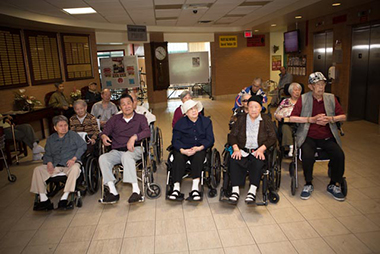

514 871-0961
514 871-0961 

实用信息

房间价格
满地可中华医院拥有128间病房，包括部分单人间和双人间。依据魁北克健康保险管理局的计算方式，再依据您的财务状况，单人房的每月费用会更贵一些。您可以在办理入住时与我们协商。
房间布置
您的房间就是您的生活空间，因此您可以在征得护士护理主管的同意下，按照您自己的喜好布置房间。如果您住的是双人房，您需要征求室友的意见。在布置房间的时候还应当考虑到安全问题。
正餐与点心
我们为您准备了两种用餐选择，其中一样是中餐。下午和晚上我们还提供点心。每周三次还有专门的营养学家为您服务。
电话、电视与报纸
您可以联系Bell公司，在房间里自己装电话。您自己负责电话线的安装和付费。
每层楼的公共活动室内装有电视。
您可以订购外送的报刊杂志到医院。工作人员很乐意把它们送到您的房间。您自己负责订阅所需的费用。
动物
满地可中华医院提倡营造一种有生活氛围的居住体验，为此，我们期望：
- 1. 满足渴望宠物来访的住院者需求；
- 2. 尊重对动物过敏的住院者和工作人员的权利；
- 3. 确保所有人的健康和安全；
- 4. 确保动物的健康和安全。
为了做到上述几点：
- 带小型宠物来医院的访客应当书面向我们保证，宠物身体健康且听话守规矩。必要时需要出示接种疫苗的证据。
- 允许探访的动物有：狗、猫、鸟（燕雀、金丝雀、情侣鹦鹉）、鱼、仓鼠和印度猪。
- 访客应当随时照看并控制好他们的动物以遵守卫生准则和集体权利。
- 除了指定区域，动物不得在医院里流窜。动物尤其不得进入咖啡厅、饭厅和厨房。
- 动物应当随时系好绳链或关在适当的笼子里。
- 动物只能在医院指定的区域里探访住院者。
- 一位或几位住院者进行动物治疗时，上述原则也适用并需要遵守。
- 如果有人投诉，按照常规程序处理。
- 若违反上述规定，医院保留进行干预的权利。
私人物品
您可以使用私人物品来布置您的房间。您还可以带上您自己的衣服。医院不对物品的丢失或盗窃负责。我们建议您不要带上贵重物品。
宗教服务
我们的宗教服务对住院者开放，不论其宗教信仰。如果您希望，您的宗教代表可以去您房间探访为您提供精神上的支持。
理发室
您可以预约理发服务。
足部护理
有一名专业的足部护理护士为您服务。对于患有糖尿病的住院者，此项服务十分重要。
打扫、维护与洗衣服务
房间和公共空间的收拾打扫由专门的维护团队负责。如有需要，您可以在房间里挂画、挂照片或其他物件。
医院免费提供住院者毛巾、床单和衣物的清洗服务。
吸烟
根据《烟草法》，满地可中华医院为禁烟单位。如果您是烟民，您可以在工作人员的陪同下到医院外面吸烟。
© 2014 MCH. All rights reserved. Tous droits réservés.